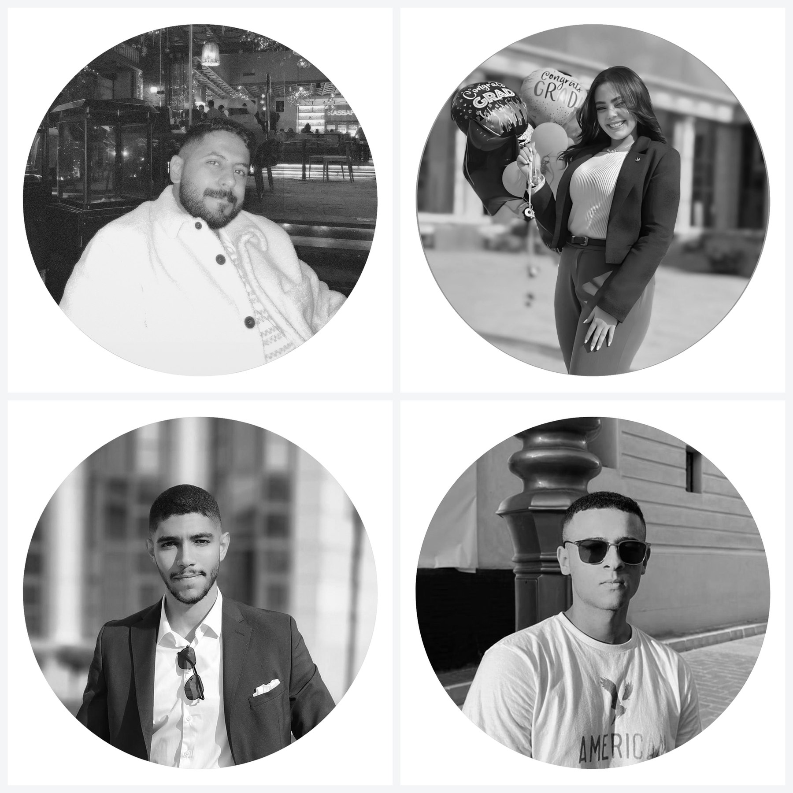
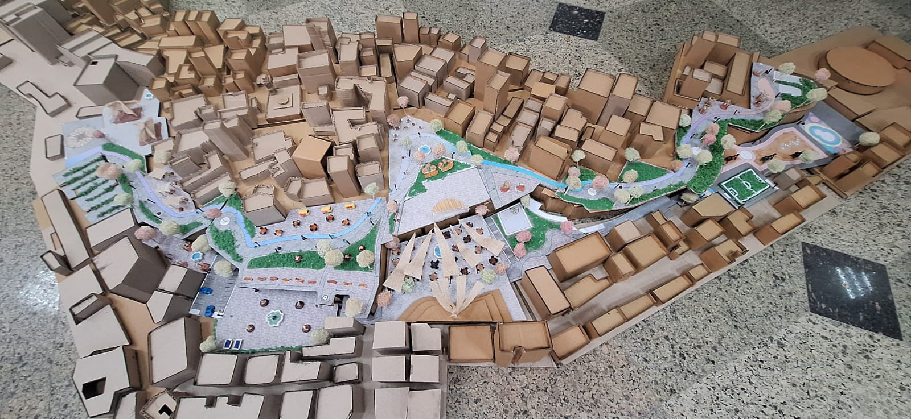
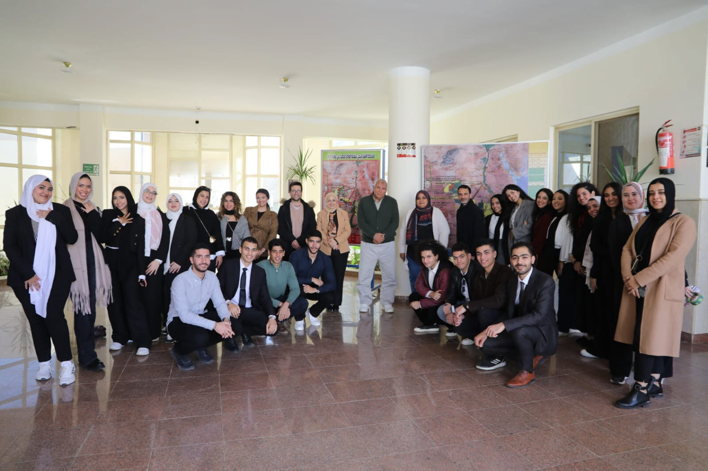
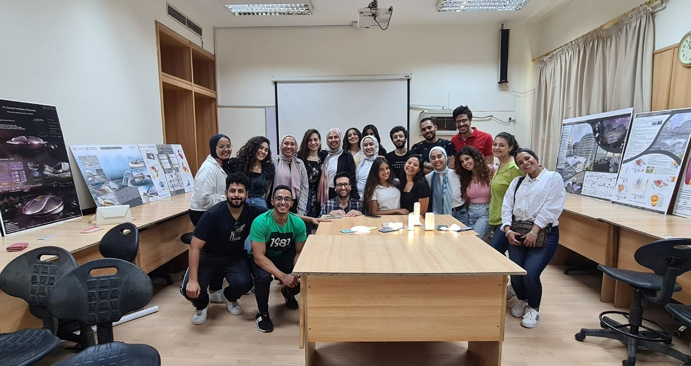
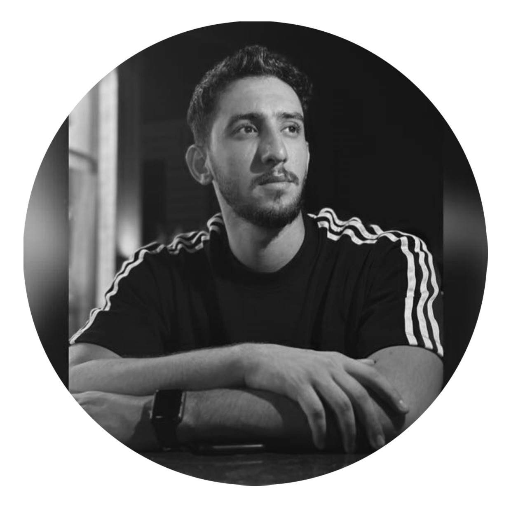

/ 02 — TEACHING
Teaching philosophy
& the studios I lead.
A short statement on how I teach, the graduation studios I supervise, and the courses I deliver across architecture and urban design.
/ PHILOSOPHY
Education is a collaborative process, not a passive one.
My teaching philosophy in architecture is rooted in the belief that education is a dynamic, collaborative process rather than a passive lecture series. Inspired by holistic learning methods, I view architecture as a synthesis of art, science, and philosophy. I strive to create a democratic studio environment built on active feedback loops, project-based collaboration, and interactive, visual engagement that allows both teacher and student to learn simultaneously.
In practice, I provide individual guidance and immersive field visits to help students discover their unique architectural identities rather than forcing a specific school of thought. While I set the foundational milestones, I encourage students to challenge design boundaries and actively learn from one another. Moving forward, my ultimate goal is to deeply integrate environmental, social, and economic sustainability into the studio, preparing a new generation of climate-conscious architects to meet future challenges.
 01
01Dar Al Uloom University — Graduation Projects
Six final-year theses supervised at Dar Al Uloom University, Riyadh (ARC 511) — Diriyah and Najdi-heritage projects, each shown as its full presentation board with the student’s own film.
 02
02Nile University — Graduation Projects
Final-year theses co-supervised at Nile University (ARUD 408, Graduation Project II) — beginning with Saagi, a filmmaking edutainment complex on the Nile at Aswan.

03MSA University — Graduation Projects
Four final-year theses supervised at MSA University, 6 October City — each carried from concept and site strategy through to a fully resolved building.
 01
01Architectural Design — Studios VI & IV
Two design studios at MSA University, with a thirty-four-student cohort carrying AI image generation into the earliest conceptual phase — from written narrative to building.

02Urban Planning & Design
A studio reading 6 October City through urban theory — the socio-economic dimensions of design and alternative approaches to urban problems — then redesigning real sites across three cycles.

03Human Settlements in Developing Countries
A studio built on a live brief from Egypt’s New Valley Governorate — housing proposals for El Kharga City, co-taught with Dr Nermine AbdelGelil.

04Advanced CAD & Thermal Comfort
An elective summer course at MSA University — parametric modelling in Rhino and Grasshopper, solar and thermal-comfort simulation for LEED strategies, closed with 3D-printed models.
 05
05Digital Fabrication
An elective summer module and workshop at MSA University — modelling, rendering and fabricating complex parametric designs through Python-based visual scripting.
 06
06Architecture Computer Graphics
A 3D Max module across five terms — building architectural 3D environments, assigning materials and lighting, and exporting rendered visualizations with V-Ray and Arnold.

07The Sustainable Envelope
A post-graduate seminar treating the building envelope as a climate system — how an assembly lowers energy demand and shapes indoor comfort through passive strategies.
 08
08The Student City — Urban Studio
A Design VII studio led by Desert City Mappers, reading 6 October City through the eyes of the students who live in it — from survey to strategy.